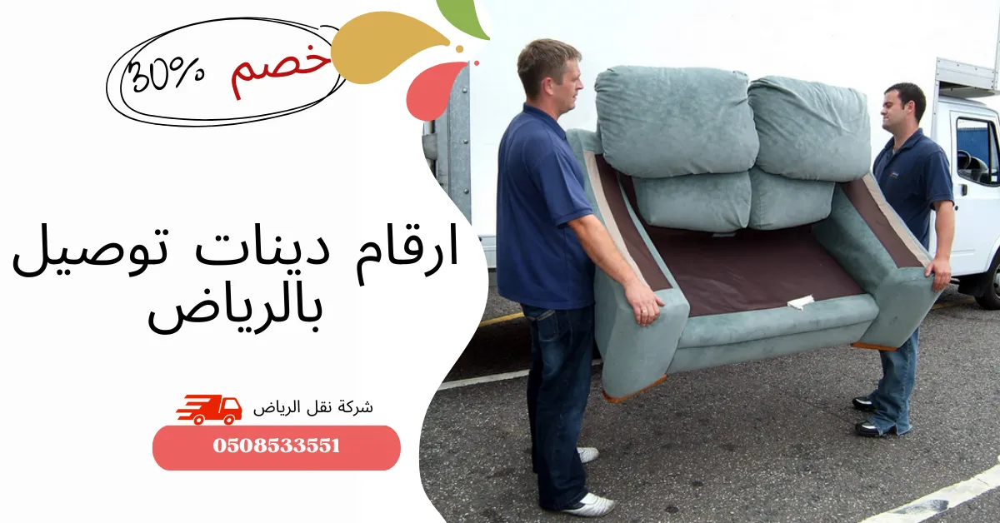

اليك اهم ارقام دينات توصيل بالرياض

في عالم النقل والتوصيل تلعب الأرقام دورًا حيويًا في تسهيل الوصول إلى الخدمات المطلوبة بسرعة وكفاءة، وخاصةً عندما يتعلق الأمر بنقل العفش أو الأثاث فإن معرفة ارقام دينات توصيل تكون أمرًا ضروريًا لضمان تجربة سلسة ومريحة، ويمكن للعملاء الاعتماد على هذه الأرقام للتواصل بسهولة مع فرق العمل مما يسهم في تحسين تنظيم عملية النقل وتقديم الدعم الفني عند الحاجة، لذا من المهم معرفة الخيارات المتاحة لضمان أفضل خدمة ممكنة، وتقدم شركة نقل بالرياض خدمات موثوقة ومتميزة تلبي احتياجات العملاء في هذا المجال.
ارقام دينات توصيل
تعتبر أرقام دينات التوصيل من العناصر الأساسية التي تسهل عملية النقل في مدينة الرياض، وفي ظل التنافس الشديد بين شركات النقل تبرز شركة نقل الرياض كخيار موثوق لتلبية احتياجات العملاء، وتوفر الشركة ارقام دينات توصيل مخصصة، وهذا مما يسهل على العملاء التواصل مع خدمات النقل والحصول على المساعدة المطلوبة بسرعة وكفاءة، وإليك بعض النقاط الرئيسية حول أهمية هذه الأرقام:
سهولة الوصول
توفر أرقام دينات التوصيل وسيلة مباشرة للتواصل مع الشركة، مما يجعل من السهل على العملاء تقديم طلباتهم دون الحاجة إلى البحث عن معلومات الاتصال.
استجابة سريعة
تتيح هذه الأرقام للشركة الاستجابة السريعة لاحتياجات العملاء، مما يسهم في تحسين تجربة نقل عفش بالرياض وتقديم الخدمة بشكل أسرع.
توفير الوقت والجهد
باستخدام أرقام دينات التوصيل يتمكن العملاء من تجنب البحث عن طرق الاتصال التقليدية، مما يوفر عليهم الوقت والجهد ويسهل عملية الطلب.
تنوع الخدمات
تتيح الأرقام للعملاء معرفة الخدمات المتاحة بسهولة مما يساعدهم على اختيار الأنسب لاحتياجاتهم الخاصة، سواء كان ذلك للنقل المنزلي أو التجاري.
تسهيل تتبع الشحنات
يمكن للعملاء استخدام الأرقام لتتبع حالة الشحنات مما يمنحهم راحة البال ويضمن لهم معرفة مكان ممتلكاتهم في أي وقت.
باختصار تساهم أرقام دينات التوصيل في تسهيل عمليات النقل وتحسين الخدمة المقدمة للعملاء، مما يجعلها خيارًا مفضلًا للكثيرين.
ارقام دينات نقل عفش بالرياض
عندما يحتاج الأفراد إلى شركة نقل عفش بالرياض نقل اثاث بالرياض مع الفك والتركيب فإن معرفة ارقام دينات توصيل ونقل عفش بالرياض تصبح ضرورية، وتقدم شركة نقل بالرياض خدماتها بكفاءة عالية مما يضمن نقل العفش بشكل آمن وسلس، ومن خلال توفير أرقام دينات مخصصة تتيح الشركة للعملاء الوصول إلى خدماتها بسهولة ويسر، وإليك بعض الفوائد المرتبطة بمعرفة ارقام دينات نقل العفش:
- تواصل مباشر: تسهل الأرقام عملية التواصل المباشر مع فريق العمل المختص، مما يضمن سرعة الاستجابة للطلبات ويعزز من فعالية الخدمة.
- جدولة دقيقة: تساعد الأرقام في تحديد مواعيد النقل بدقة، مما يضمن عدم التأخير في الخدمة ويمنح العملاء القدرة على تنظيم جداولهم بشكل أفضل.
- دعم فني متاح: توفر الأرقام إمكانية الحصول على الدعم الفني عند الحاجة، مما يعزز من راحة العملاء ويضمن لهم الحصول على إجابات سريعة لاستفساراتهم.
- تقديم استشارات مجانية: يمكن للعملاء الحصول على نصائح واستشارات حول طرق نقل العفش بشكل آمن، مما يساعدهم في اتخاذ قرارات مستنيرة.
- سهولة تغيير المواعيد: تتيح الأرقام للعملاء إمكانية تعديل مواعيد النقل بسهولة، مما يتناسب مع جداولهم المتغيرة ويوفر لهم مرونة أكبر.
إن معرفة ارقام دينات نقل عفش بالرياض تساعد العملاء في تنظيم عملية النقل بشكل أفضل، مما يسهم في توفير تجربة خالية من المتاعب.
دينا نقل عفش بالرياض
عند التفكير في نقل العفش يعتبر دينا نقل عفش بالرياض الخيار الأمثل للعديد من العملاء، وتوفر شركة نقل بالرياض هذه الخدمة بمهنية عالية مما يضمن سلامة الأثاث أثناء النقل، باستخدام ارقام دينات توصيل مخصصة، ويمكن للعملاء الحصول على الخدمة التي يحتاجونها بسهولة، وفيما يلي بعض المميزات المرتبطة بدينا نقل عفش بالرياض:
حماية الأثاث
تستخدم الشركة مواد خاصة لحماية العفش أثناء النقل، مما يقلل من خطر التلف ويضمن وصول الأثاث بحالة ممتازة إلى الوجهة الجديدة.
قدرة التحمل
الدينات قادرة على حمل أحجام وأوزان مختلفة من الأثاث، مما يلبي احتياجات جميع العملاء سواء كانوا أفرادًا أو شركات.
فريق عمل محترف
تمتلك الشركة فريقًا مدربًا لتنظيم عملية النقل بشكل احترافي، مما يسهل على العملاء متابعة سير العمل ويضمن تنفيذ الخدمة بكفاءة.
تقديم خدمات التعبئة والتغليف
توفر الشركة خدمات تعبئة العفش بطرق آمنة لحمايته أثناء النقل مما يساهم في تقليل الأضرار المحتملة.
تأمين الأثاث
تقدم خيارات تأمين للأثاث أثناء النقل مما يمنح العملاء راحة البال ويضمن لهم الحماية المالية في حال حدوث أي ضرر.
باستخدام دينا نقل عفش بالرياض، يمكن للعملاء الاستمتاع بتجربة نقل مريحة وآمنة مع ضمان جودة الخدمة.
دينا نقل عفش شرق الرياض
إذا كنت تقطن في شرق الرياض وتبحث عن ارخص شركة نقل عفش بالرياض فإن دينا نقل عفش شرق الرياض هو الخيار المثالي لك، وتقدم شركة نقل بالرياض خدماتها في جميع أنحاء الرياض مع تركيز خاص على تلبية احتياجات سكان شرق الرياض، وبفضل ارقام دينات توصيل متاحة يمكن للعملاء التواصل مع الشركة بسهولة، وإليك بعض الخصائص المميزة لهذه الخدمة:
سرعة التنفيذ
تقدم الشركة خدمات سريعة تتناسب مع جدول الزبائن، مما يسهل عليهم الانتقال في الوقت المحدد ويقلل من التوتر المرتبط بعمليات النقل.
أسعار تنافسية
توفر الشركة أسعارًا مناسبة مما يجعل الخدمة متاحة للجميع ويعزز من قدرتها التنافسية في السوق.
خدمة عملاء ممتازة
تسعى الشركة لتقديم أفضل خدمة للعملاء من خلال التواصل المستمر وتلبية احتياجاتهم، مما يعزز من شعورهم بالراحة والثقة.
تحديد المواقع بدقة
توفر الشركة خدمات تحديد المواقع لتسهيل عملية النقل، مما يقلل من أي لبس حول وجهات النقل.
تنوع خيارات النقل
تشمل خدمات النقل مختلف الأحجام مما يلبي احتياجات جميع العملاء من الأفراد إلى الشركات الكبيرة.
دينا نقل عفش شرق الرياض يضمن للعملاء تجربة نقل سلسة ومريحة، ومع التركيز على تقديم أعلى مستويات الخدمة.
خدمات شركة نقل بالرياض
تقدم شركه نقل بالرياض مجموعة شاملة من خدمات النقل، وتشمل النقل البري و نقل العفش والتخزين، وتعتبر هذه الشركة من الشركات الرائدة في مجال النقل في الرياض، حيث تسعى دائمًا لتقديم خدمات عالية الجودة بأسعار تنافسية، وتوفر الشركة ارقام دينات توصيل مخصصة، مما يسهل على العملاء الوصول إلى خدماتها، وإليك بعض أهم خدمات الشركة:
- نقل العفش: تقدم الشركة خدمات نقل العفش بشكل احترافي مع ضمان حماية الأثاث وتحميله بطريقة آمنة ومناسبة.
- التخزين الآمن: توفر خدمات التخزين للأثاث مما يضمن حماية الممتلكات في بيئة آمنة ومراقبة على مدار الساعة.
- دعم العملاء: فريق دعم العملاء متميز ويعمل على حل أي مشكلات قد يواجهها العملاء، مما يسهم في تعزيز رضاهم وثقتهم في الخدمة.
- خدمات النقل الدولي: تقدم الشركة خيارات للنقل الدولي مما يسهل على العملاء الانتقال إلى بلدان أخرى دون عناء.
- تقديم استشارات مجانية: تساعد العملاء في اختيار الحلول المناسبة لاحتياجاتهم، مما يوفر لهم الوقت ويسهل عليهم اتخاذ القرارات الصحيحة.
تعتبر خدمات شركتنا خيارًا مثاليًا لمن يبحث عن حلول نقل موثوقة وفعالة وتقدم افكار لتسهيل نقل العفش مما يجعلها رائدة في هذا المجال.
الأسئلة الشائعة حول ارقام دينات توصيل
ما هي أرقام دينات التوصيل وكيف يمكنني الحصول عليها؟
ارقام دينات توصيل هي أرقام مخصصة للتواصل مع خدمات النقل، ويمكنك الحصول عليها من خلال زيارة موقع شركة نقل بالرياض أو الاتصال بخدمة العملاء مباشرة.
كيف يمكنني التأكد من سلامة الأثاث أثناء النقل؟
تضمن شركات النقل الجيدة مثل شركه نقل بالرياض استخدام مواد حماية وتغليف مناسبة، كما يمكن للعملاء اختيار خيارات تأمين للأثاث للحصول على حماية إضافية.
هل تقدم شركة نقل بالرياض خدمات نقل دولية؟
نعم تقدم شركة نقل بالرياض خيارات للنقل الدولي مما يسهل على العملاء الانتقال إلى بلدان أخرى وفقًا لاحتياجاتهم.
كيف يمكنني تعديل موعد النقل بعد تحديده؟
يمكنك تعديل موعد النقل بسهولة من خلال الاتصال برقم دينات التوصيل المخصص للشركة، حيث سيساعدك فريق الدعم في إعادة جدولة النقل وفقًا لاحتياجاتك.